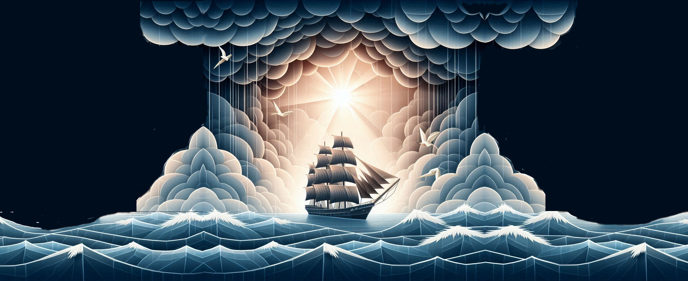

Psalm 107: Where is the Love?
Published on 2024-06-22

This article originally appeared as the chapter "Psalm 107: Where is the Love?" in Peace, like Solomon Never Knew. The idea that it prophesies the return of the Jews to Israel in authentic detail is not original to me; I heard a preacher speak about this decades ago. However, most of the remaining prophetic connections in this article are my own discoveries. Few Psalms are as rich in detail about God's plans for His people as Psalm 107. Enjoy!
- Where is the Love?
- The Great Ingathering
- Power to Vanquish the Foe (33–354 AD)
- Power to Face the East (354–675 AD)
- Power to Win the West (675–996 AD)
- Power to Reach the North (996–1317 AD)
- Power to Sail South (1317–1638 AD)
- Power to Reach the World (1638–1959 AD)
- Power to Endure to the End (1959–2280 AD)
- A Harvest of Harvests
- Pick a number, any number…
Where is the Love?
Sitting in the middle of the seven historical psalms is the pivotal on107. The writer of Psalm 106 prayed that God would bring the exiles back to Israel. This psalm is the answer to that prayer. It recounts story after story of people rescued by God from troubles of every kind. Each exile faced a different crisis. No two needed rescuing in the same way, but God was up to the task. If anyone thinks their own problems are unique and insoluble, we worship a unique God.
In the 1970s, Roberta Flack sang a sad song titled “Where is the Love?” Many people look to God for love but don’t find it. Maybe they don’t know what love is. Maybe they give up their search too soon. Maybe they don’t want to give up the idols competing for God’s affection. God’s love runs like a river through this psalm. “He turned the desert into pools of water and the parched ground into flowing springs...” (107:35) The Holy Spirit flows in to water parched hearts. The key to understanding its words is to look in each section to find “where is the love”. That position reveals times when God’s love was most potent during each era.
The rhythm of Ecclesiastes 3 hums throughout the forty- three verses of this psalm. It is divided in seven sections, but four are singled out for special focus by repeating this refrain:
Let them give thanks to the LORD for his unfailing love
and his wonderful deeds for mankind.
- (Repeated in verses 8,15,21,31)
The number four is first introduced in verse three, which declares that God will gather His people from east, west, north and south. Ecclesiastes twice invoked analogies to the cardinal directions, with the occurrence in Ecclesiastes 11 referring to God sending missionaries out to reach the wider world, a matter touched on in this psalm. Deeper still, every section of the poem is structured in four parts:
- People end up in trouble
- They cry out to God
- God rescues them
- The people praise Him
Seven sections of four parts each makes twenty-eight. That correspondence with Ecclesiastes makes it appropriate to ask: do the seven sections match the seven stages of growth? Do they match the twenty-eight times, in order and tell a coherent story? Let us see.
Our theory is that this psalm is a clock for the work of the Holy Spirit. It begins in 33 AD at Pentecost and runs until 2280 AD, at the end of the era. It divides time into twenty- eight sections but begins about a thousand years after Solomon’s Celestial Clock (which started in 960 AD, at the dedication of the temple). Thus the two clocks will be out of phase at the start and assign different “times” to each era, but gradually converge as they near the end.
The former clock was associated with the Son, the Word of God. It touched on the actions of the church. Since the actions of believers are open to the student of history to see, matching such events to Ecclesiastes and other Bible passages made sense. However, the Spirit is like the wind. It blows where it pleases and you can’t trace its path. The Spirit often begins a hidden work in one era which does not manifest in identifiable historical events until the next. With that in mind, here is the Spirit Clock.
33–354 AD. Existential Security. Born, die, plant & uproot.
354–675 AD. Functional Ability. Kill, heal, tear down & build.
675–996 AD. Emotional Stability. Weep, laugh, mourn, & dance.
996–1317 AD. Relational Amity. Scatter stones, gather, embrace & refrain.
1317–1638 AD. Resource Opportunity. Search, give up, keep & throw away.
1638–1959 AD. Community. Tear, mend, be silent & speak.
1959–2280 AD. Loyalty. Love, hate, war & peace.
The Great Ingathering
The first section serves as a table of contents into much of the psalm.
Give thanks to the LORD, for he is good;
his love endures forever.
Let the redeemed of the LORD tell their story—
those he redeemed from the hand of the foe,
those he gathered from the lands,
from east and west, from north and south.
- Psalm 107:1-3, NIV
Many prophecies in the Bible have a dual fulfillment. This prophecy looks to be one of them. The first fulfillment was the return from the Babylonian Exile and the second fulfillment (for Israel) was the return from the diaspora after the fall of Nazi Germany and the founding of the new nation of Israel. However, the prophecy in this psalm has a third meaning that pertains to the church.
When referring to Israel, the details are both poetic and specific. These verses describe the ingathering of the Jews in five stages and that is not only how it happened, but the stages are given in chronological order. The odds of getting that right by chance are one in a hundred twenty:
120 = 5! = 1 x 2 x 3 x 4 x 5
(1) The hand of the foe. The foe was Adolph Hitler. The first large group to reenter Palestine was composed of Jewish refugees fleeing the Nazis, both those who left during the 1930s and those who were rescued from the concentration camps at the end of the World War II.
(2) Gathered from the East. From the Jewish Virtual Library’s article Total Immigration to Israel by Continent and Year, we have year-by-year tallies of how many Jews emigrated to Israel. If you take the total number from each continent and then figure out the year by which half that total arrived cumulatively from each continent, you can establish a quantitative order for each returning cohort. The second cohort to arrive in Jerusalem hailed from Asia, from the East. Half of the roughly 225,000 Jews to emigrate from Asia had arrived by 1951. These were Jews driven from their homes by enraged Muslim nations like Jordan, Iraq and Iran following the restoration of Israel in 1948.
(3) Gathered from the West. The Jews of the West lived in North Africa, in Egypt, Libya, Morocco and other Arab nations who similarly drove out many of their Jewish citizens following the Suez War of 1956. Of the approximately 526,000 Jews to come from that region, half had resettled in Israel by 1965.
(4) Gathered from the North. Only some of the Jews of Europe emigrated in the 1940s. Others remained in Europe by choice – or in Russia and Eastern Europe by force. The Iron Curtain imprisoned them from returning to their ancestral homeland. After the Berlin Wall fell and the Soviet Union collapsed, huge numbers of Jews streamed back into the land. Of the 2.3 million Jewish people to emigrate from these lands, half had arrived by 1990, which was also the high-water mark of the influx.
(5) Gathered from the South. Who are the Jews of the South? The Hebrew for this this word also means “the sea”. In Israel, Solomon’s key seaport was at Ezion-Geber, on the eastern wing of the Red Sea, to the south. The Jews of the south are those who traveled by sea to the most remote regions of the earth: the islands and the Americas. This screws with the math. Only 290,000 Jews have returned to Israel from the US, Canada, Mexico, Argentina and Brazil. The halfway point for that immigration was in 1969, which comes before the halfway time for the Jews of the North. However, America has about six million Jewish citizens, the largest concentration outside of Israel. Their return to Israel hasn’t happened yet. They will be the last to return. The time of hate is on the horizon. Jews are the canaries in the coal mine. When hateful ideologies spread across the face of the earth, they will be among the first to suffer.
Take a moment to see what we just did. Without theology, without numerology, without esoteric symbolism or fanciful interpretations we crunched raw numbers based on demographic data related to objectively verifiable immigration patterns and proved that the Bible anticipated them by thousands of years. How great is our God!
(For a detailed look at what Psalm 107 says about the recent history and future of Israel, see “Appendix C: A Time for Israel” in Peace, like Solomon Never Knew.)
Now how do these verses apply to the church?
Power to Vanquish the Foe (33–354 AD)
The first great foe of the church was Rome. God granted the church the emotional and spiritual power to conquer that foe. By the time this period ended in 354 AD, Constantine had ended state persecution of Christians and become the first of a long line of Christian Emperors.
What of the first four times – to be born, die, planted and uprooted? The birth was the church springing into existence in 33 AD and the death, the destruction of the temple in Jerusalem in 70 AD and the genocide and scattering of the Jews following the Bar Kokhba revolt in 136 AD. The church was planted and pagan control over Rome uprooted.
Where is the love? “His love endures forever.” Since the word love occurs in the first verse of the section, God’s greatest outpouring of love occurred in the beginning of this era, on the day of Pentecost. Upon reaching the end of the era, that love was on the move again: to the east.
Power to Face the East (354–675 AD)
Some wandered in desert wastelands,
finding no way to a city where they could settle.
They were hungry and thirsty,
and their lives ebbed away.
Then they cried out to the LORD in their trouble,
and he delivered them from their distress.
He led them by a straight way
to a city where they could settle.
Let them give thanks to the LORD for his unfailing love
and his wonderful deeds for mankind,
for he satisfies the thirsty
and fills the hungry with good things.
- Psalm 107:4-9
In the first section, the number four was seen in the compass directions east, west, north and south. Starting with this section, the pattern becomes suffering (4-5), crying to God for help (6a), God rescuing His people (6b-7), and his people praising him (8-9).
This is the first of four consecutive sections containing the phrase “Let them give thanks to the LORD for his unfailing love and his wonderful deeds for mankind...”. Could these four sections each match a different compass direction?
This episode shows people wandering the desert in search of a city for protection. This period in history (354– 675 AD) was dominated by two cities, Rome and Constantinople. The city of man was sacked twice, in 410 and 546, ending Rome’s dominance over the world of the Mediterranean. Yet even from a position of weakness, Pope Gregory the Great rendered assistance to refugees from the barbarian invasions, a visible manifestation of God’s assistance to believers seeking refuge.
In a first trial from the east, in 452 AD Pope Leo the Great persuaded Attila the Hun to turn back and not invade Italy.
In 426 AD, Augustine wrote The City of God, defying the world to overthrow the heavenly city that God would raise up. While Constantinople was not that city, it did rise to prominence and became Christendom’s bulwark against the surrounding chaos. The four times – to kill, heal, tear down & build – match this era. There was killing and tearing down in the west, as the Western Roman Empire fell, but healing and building up in the east, where Justinian erected the Hagia Sophia (537). This era’s four times pertain to growing in both physical strength and mental ability.
This was when the church grew in numbers, political and military strength, and began to reframe philosophy and all human knowledge with Christ at its center.
With the Western Roman Empire fallen and the Eastern Roman Empire in ascendancy, this era does represent a movement of the church to the east, the first of the four compass directions in Psalm 107:3. It was therefore from the east that the gravest threats of this period arose.
What was the most blessed time in this era? The placement of the word “love” tells us when. “Love” appears late in this passage, in the fifth of six verses, hence corresponds to the mid sixth century, a time when Justinian was able to reclaim much of the western part of the empire. That time of grace ended with wars in the east, first against the Sassanid Empire, which drained the vitality of each empire, providing an opening for the Islamic conquests of the seventh century.
Power to Win the West (675–996 AD)
Some sat in darkness, in utter darkness,
prisoners suffering in iron chains,
because they rebelled against God’s commands
and despised the plans of the Most High.
So he subjected them to bitter labor;
they stumbled, and there was no one to help.
Then they cried to the LORD in their trouble,
and he saved them from their distress.
He brought them out of darkness, the utter darkness,
and broke away their chains.
Let them give thanks to the LORD for his unfailing love
and his wonderful deeds for mankind,
for he breaks down gates of bronze
and cuts through bars of iron.
- Psalm 107:10-16, NIV
This was an emotional time for the church. The highest form of weeping, laughing, mourning & dancing occurs in the context of worship. The psalms are a book for an emotional people, to help us deal with the traumas of life and express our deepest fears and longings and desperate pleas to God. When we engage in true worship, God shines a light into the dark places of our heart to bring truth, repentance and freedom. Thus it was catastrophic when converging forces prevented many faithful from worshiping God as they had been taught. One word occurs four times in this passage: darkness. When historians refer to this period, what do they call it?
The Dark Ages.
What forces prevented Christians from worshiping? The first was the Islamic Jihad, which ushered in a time when “there was no one to help” (107:12). Many Christians were slain, enslaved, or forced to convert. The second was the reaction of the Byzantine Emperors. Fearing that the success of Islam (which forbade any images of people or animals in their art as idolatry) was God’s displeasure with the use of icons in Christian worship, they took action. During the Iconoclasm Controversy, iconoclasts (icon haters) and iconodules (icon lovers) fought over which was right. Surely some iconodules were practicing idolatry, just as some iconoclasts were forbidding legitimate forms of worship involving Christian art. The church finally worked out the rules, but it took a century of civil unrest, warfare, and theological debate to resolve the issue. In a web article [76], Prof. Brad Elliott summarizes those rules:
A particular image or group of images is appropriate
in a particular context in the life of the Church
when the following conditions are satisfied:
- It communicates truth to its observers.
- It neither discourages worship of God nor misdirects worship away from God.
(See Iconomy: A Rule Theory for Images in the Church for details.)
When verse 16 of the psalm says “he breaks down gates of bronze and cuts through bars of iron”, it echoes words also proclaimed by Isaiah:
I will go before you and will level the mountains;
I will break down gates of bronze and cut through bars of iron...
...
All the makers of idols will be put to shame and disgraced;
they will go off into disgrace together.
- Isaiah 45:2,16, NIV
As Isaiah tells it, a war (the breaking of barred city gates) would set people free from idolatry. In 726, Emperor Leo III, an iconoclast, commanded that an icon of Christ be removed from the Chalke Gate, the monumental gate at the entrance to the palace in Constantinople. Chalke Gate means “bronze gate”. Isaiah’s words were confirmed at last.
Bronze and iron also symbolize the Greek and Roman empires, respectively. This time also saw the slow movement away from the philosophy of the ancients toward one rooted more solidly in the Bible.
The darkness of this era was not confined to the east. The “Rule of the Harlots” corrupted the Roman Catholic Church in the tenth century. Even so, there was a resurgence of faith and order in the west. This occurred in proportion to the position in which the word “love” occurred in this passage, in verse 15, the sixth of seven verses.
Charlemagne was crowned Holy Roman Emperor and brought order, education and culture to Western Europe. Just as the center of power of the church moved east in the previous era, in this one it moved west. By the end of the era, most of Europe was ruled by Christian kings. Charlemagne used his power for many things, but one connects directly to this psalm. “He brought them out of darkness, the utter darkness, and broke away their chains.” Charlemagne forcefully opposed slavery throughout his domain.
Power to Reach the North (996–1317 AD)
Some became fools through their rebellious ways
and suffered affliction because of their iniquities.
They loathed all food
and drew near the gates of death.
Then they cried to the LORD in their trouble,
and he saved them from their distress.
He sent out his word and healed them;
he rescued them from the grave.
Let them give thanks to the LORD for his unfailing love
and his wonderful deeds for mankind.
Let them sacrifice thank offerings
and tell of his works with songs of joy.
- Psalm 107:17-22, NIV
In this time of relationships, of scattering and gathering stones, of embracing and refraining, the Christian world entered a crisis. The refraining was the Great Schism of 1054 AD, the final rupture between East and West. The church tried to forge a path southward during the Crusades, but after a brief time of success were again driven out by the Saracens. The great northward expansion of the church into Scandinavia and the Baltics was the defining direction of motion.
Even so, these verses speak to the Crusaders who first took Jerusalem. The entire enterprise was filled with rebelliousness, disorder, poor planning, high casualties and near disaster. As the soldiers neared the gates of Jerusalem, food supplies were low. Despite privation, they trusted a prophecy and “loathed all food”. This means that they fasted and marched around the city in worship, imitating Joshua’s siege of Jericho. God granted them the victory.
During this era, God “sent out His word and healed them”. It saw the founding of several great monastic orders, such as the Franciscans and Dominicans. From their ranks arose great scholars like Aquinas who received that word and laid the foundation for the great advance in science that would reshape the world.
If the Western and Eastern churches could not embrace each other, still other divides were bridged. In a famous story, Saint Francis saw a leper along the road. Overcoming the natural internal revulsion to avoid such a person, he dismounted and embraced the man. Upon returning to his horse, he turned to look, but the man was gone. He was convinced that he had embraced the Lord himself. Like Francis, his companions embraced the poor and brought the gospel to the poor in the cities, far from the rural monasteries where most monks lived.
The end of this era would see the troubles return. The Great Famine of 1315–1317 claimed millions across Europe. As with several previous sections, the word “love” comes near the end of each passage, but not in the last verse. That means that God’s greatest blessings fall in the second half of each era, but not at its end. Each era ends in suffering.
This era has a second marker warning of trouble. One letter of the Hebrew alphabet is nun. In two chapters of the Bible and only two, passages are marked with an inverted nun. The letter is mirrored. No one knows what it means (though theories abound).
The first chapter that has inverted nuns is Numbers 10, which has two:
Whenever the ark set out, Moses said,
“Rise up, LORD!
May your enemies be scattered;
may your foes flee before you.”
Whenever it came to rest, he said,
“Return, LORD,
to the countless thousands of Israel.”
- Numbers 10:35-36, NIV
So the first two occurrences speak of the Lord going out to fight against His foes, then returning to the camp to rest and abide with his people.
The second chapter that has inverted nuns is Psalm 107. It has seven! The two occurrences in Numbers seems to correspond to the Son, since the ark of the covenant held the tablets of the law. Thus these seven occurrences refer to the work of the Holy Spirit. Just as in Numbers, there are two groups of inverted nuns. The first six are clumped together in this section and the next, with one each in verses 20–25. The last inverted nun is in the final section.
What does this tell us? The Holy Spirit would go out in power to do battle against God’s enemies in this period and the next. What happened during these two eras? Crusades. Exploration. The conquest of the Americas. The Protestant Reformation. The wars of religion and the General Crisis of the 17th century. Out of the whole Bible, God marked these verses as special. We need to pay close attention to them.
Power to Sail South (1317–1638 AD)
Some went out on the sea in ships;
they were merchants on the mighty waters.
They saw the works of the LORD,
his wonderful deeds in the deep.
For he spoke and stirred up a tempest
that lifted high the waves.
They mounted up to the heavens and went down to the depths;
in their peril their courage melted away.
They reeled and staggered like drunkards;
they were at their wits’ end.
Then they cried out to the LORD in their trouble,
and he brought them out of their distress.
He stilled the storm to a whisper;
the waves of the sea were hushed.
They were glad when it grew calm,
and he guided them to their desired haven.
Let them give thanks to the LORD for his unfailing love
and his wonderful deeds for mankind.
Let them exalt him in the assembly of the people
and praise him in the council of the elders.
- Psalm 107:23-32
This is the era devoted to resources: the times to search, to give up, to keep, and throw away. With the gold of the new world, God threw wide the storehouses of heaven and supplied Christian nations with unimaginable wealth.
In a past chapter, the tragedy of this era was spelled out: Byzantium is the treasure that was thrown away. The Black Death claimed over half of Europe and waves of change engulfed the world. The Holy Spirit is often compared to a wind, and this passage carries the analogy to its most extreme, with the Protestant Reformation being like a second Pentecost.
As expressed earlier, the Hebrew word for south also means the sea, and the gospel took to the seas as European nations captured ports and islands in Africa, India, China and the Americas. However, it is the completion of the number four with the fourth compass direction that is most stunning. The Book of Revelation speaks of the four horsemen of the apocalypse. In earlier chapters we identified when each horseman rode forth to judge the world. This is where the interpretation of Scripture from a historicist perspective proves most challenging. The horsemen have not ridden forth once in the history of the world, but many times. God’s principal judgment of Israel occurred long ago. The judgement of the world has begun and we await the opening of the fifth seal. This psalm describes a different sortie: the judgment of the church.
The second, third, fourth and fifth sections of this psalm describe the judgment of Rome and the church that clung too closely to it for safety. Byzantium attempted too harmonious and tight a relationship between church and state. War, civil war, pestilence and death are the curses that the horseman brought.
- In the second era, the time of facing east, war came to Byzantium first with the Sassanid Empire, then with Islam.
- In the third era, the time of facing west, Byzantium was convulsed by dozens of civil wars. The 7th and 8th centuries brought on more civil strife than at any other time in its history.
- In the fourth era, the time of facing north, the pestilence of the Great Famine claimed many lives.
- In the fifth era, the time of sailing the southern seas, the Black Plague killed even more, and the Fall of Constantinople spelled the final death of the Byzantine empire.
With this observation, we can understand the meaning of the first six inverted nuns. God marked off this as a time of reckoning. Consider this terrible idea. God had determined that this era would experience a huge expansion of Christianity throughout the world. You would think that in such an important time a military commander would not court marshal his best generals. Not so with God. He disciplined the Eastern church with utmost severity and raised up others to carry His banner. No individual and no empire, however large, ancient, populous, or seemingly indispensable, is exempt from God’s rod of correction.
Power to Reach the World (1638–1959 AD)
He turned rivers into a desert,
flowing springs into thirsty ground,
and fruitful land into a salt waste,
because of the wickedness of those who lived there.
He turned the desert into pools of water
and the parched ground into flowing springs;
there he brought the hungry to live,
and they founded a city where they could settle.
They sowed fields and planted vineyards
that yielded a fruitful harvest;
he blessed them, and their numbers greatly increased,
and he did not let their herds diminish.
- Psalm 107:33-38
By this point, the times of this psalm and those of the previous clock of Solomon have started to converge. The era of communication has arrived. The times to tear, mend, to be silent and speak sweep over the world. The time to tear was the General Crisis. The most deaths in those wars occurred between 1615 and 1650, but additional wars filled out the 17th century.
This passage says that God turned “rivers into a desert” and “fruitful land into a salt waste”. The American Southwest endured prolonged drought in the 16th century, and the east coast (including Virginia) in the 17th century. Measurements of shellfish dug up from that era show that saltwater reached farther upstream near Jamestown than in previous years, indicating heavy drought. Many have written about how European explorers and settlers spread disease to the Americas. Only recently have we learned that the peoples of the Americas were weakened by severe drought, which amplified the effects of the disease. God used this drought to spread the gospel swiftly to a new continent.
At the same time, God brought the hungry – the Pilgrims and other settlers – to a new land and blessed their harvest. Their numbers greatly increased, from a few thousand at the beginning to hundreds of millions today in America, the most prosperous nation the earth has ever known.
(It must also be noted that the Jewish settlers who returned to Israel during this time found the land like a desert but made it bloom.)
This episode describes unimaginable prosperity – and ingratitude. In the preceding sections, people were called upon to “give thanks to the LORD for his unfailing love”. This section displays God’s love like no other – but there is no one to praise Him!
Power to Endure to the End (1959–2280 AD)
Then their numbers decreased, and they were humbled
by oppression, calamity and sorrow;
he who pours contempt on nobles
made them wander in a trackless waste.
But he lifted the needy out of their affliction
and increased their families like flocks.
The upright see and rejoice,
but all the wicked shut their mouths.
Let the one who is wise heed these things
and ponder the loving deeds of the LORD.
- Psalm 107:39-43
The first verse of this section is the last place in the Bible marked with an inverted nun. Their numbers decreased... This describes a great apostasy, in which people desert Christianity in large numbers. I believe that this final inverted nun points to the final tribulation of the saints. In Numbers, the second inverted nun was for the verse where the Lord returns to the camp. This will not be a time for victory in battle, but for worshiping God and rejoicing in his return. Jesus Christ will return and he will win the battle. It is for us to stand and endure to the end. It is for us to “ponder the loving deeds of the LORD.” For all the terrible events, rescues, and relapses, how does the story end?
The story ends with love, but...
A Harvest of Harvests
If the seven historical psalms conform to a harvest pattern, Psalm 107 must fit the fourth phase, “pouring water”. How often does this psalm refer to the need for water or storms?
- Desert wastelands (107:4)
- Thirsty (107:5)
- He satisfies the thirsty (107:9)
- Merchants on the mighty waters (107:23)
- Wonderful deeds in the deep (107:24)
- Tempest... waves (107:25)
- Down to the depths (107:26)
- He stilled the storm... waves... hushed. (107:29)
- Turned rivers into a desert (107:33a)
- flowing springs into thirsty ground (107:33b)
- Fruitful land into a salt waste (107:34)
- Turned the desert into pools of water (107:35a)
- Parched ground into flowing springs (107:35b)
- He who pours contempt on nobles made them wander in a trackless waste. (107:40)
Thus the psalm as a whole uses imagery of a thirsty desert passing through a storm toward a concluding harvest time of plenty. The whole psalm speaks of the watering of the Holy Spirit, but it also is broken into a finer harvest pattern, according to the seven crises and rescues we just explored.
Preparation (107:1-3): The base of operations for all that would follow was the conversion of Rome into a Christian empire during the fourth century.
Plowing (107:4-9): Multiple sacks of Rome, the fall of the Western Roman Empire and the first Islamic Jihad brought great suffering to the church.
Planting (107:10-16): Most of Western Europe was planted with the gospel. *“He brought them out of darkness.” * The Word of God ended the Dark Ages and enlightened the people as evidenced by the Carolingian Renaissance.
Pouring (107:17-22): “He sent out his word and healed them.” The Holy Spirit healed the heart of the church through people like Saint Francis of Assisi.
Plucking (107:23-32): “They saw the works of the LORD, his wonderful deeds in the deep. For he spoke and stirred up a tempest that lifted high the waves.” Wonderful deeds are miracles of the Father, who swept away nations during the General Crisis and redirected the church to focus on sending missionaries to the world by providing it with vast resources and new vision.
Producing a Harvest (107:33-38): “Their numbers greatly increased.” Christian missionaries of the 19th and 20th centuries went out and spread the gospel to the ends of the earth, producing a great harvest of saved sinners.
Peace (107:39-43): One day, Jesus Christ will return, and “The upright see and rejoice, but all the wicked shut their mouths.” (107:42)
... We still await that final time of peace.
Pick a number, any number…
When cometh the Lord? Psalm 107 focuses on God’s double ingathering of His exiled people. For the Jews it was back into Israel, first from Babylon and then from the nations. For the church, it was being sent into the world as missionaries to gather lost souls into the church, then in the future, to be raptured up to Heaven. We want to know when that last event will occur, but it is and will remain a surprise.
Despite Jesus’ declaration that no one will know the day or the hour, many try, and the gullible believe them. If such a person inspects the fruits of the research presented in this book, they will have all the ammunition they need to make new predictions. Let’s play a game. I call it Rapture Roulette.
Say that the time of war completes in 2280 AD as the rest of this book argues. By the chronology employed throughout, this will be the year 6300 AM (anno mundi, or years since creation). Will peace come immediately? After the completion of another 120 year generation? Or partway through that 42nd generation, as suggested elsewhere in this work?
One principle stated and adhered to during this analysis of the Bible and history is that ideas from numerology are creative ways to find possible connections in Scripture, but those ideas must be solidified via other textual evidence. A careless or manipulative scholar will produce dazzling numbers to argue their point when such evidence is lacking. Seeing such numbers can persuade troubled people longing for an answer. The problem is that the deceiver will show one number but withhold six others that appear equally compelling.
If we concede that the Lord intends to return between 6300 AM and 6420 AM, which years look most likely based solely on numerology? We will take the prime factors of each year, counting from the creation.
6300 AM (2280 AD). Factors: 2·2·3·3·5·5·7. We see the Son (2) twice, the Father (2) twice, the number for the short harvest (5) twice, and the number for the Holy Spirit (7) once, but there are seven factors total, for a second 7. Thus this year represents the final harvest by the Trinity of mankind. Do you feel goosebumps?
6318 AM (2298 AD). Factors: 2·3·3·3·3·3·13. This year also has seven prime factors, for the Holy Spirit. The Son (2) appears once, but the Father (3) appears five times, representing the harvest. Thirteen (13) is our bonus number. We didn’t cover this in the chapter on numbers, but it is a powerful number (courtesy of biblestudy.org's article, The Number 13 ):
- Mark 7 lists 13 things that defile a person.
- Solomon spent 13 years building his palace (six years longer than the temple).
- Haman persuaded the King to sign a decree to kill the Jews. The decree was signed on the 13th day of the first month and was to go into effect on the 13th day of the 12th month.
- The Valley of Ben Hinnom (aka Hinnom Valley), where idolaters sacrificed children to Moloch, is mentioned 13 times in the Bible.
- Nimrod, the 13th man in Ham’s line, rebelled against God at Babel, so this number represents rebelliousness.
- The word dragon, referring to Satan, occurs 13 times in Revelation.
Taking all those numbers together, we have Father, Son and Holy Spirit defeating the dragon. The dragon sacrificed other people’s children to gain power but the Son offered his own life to give power away, to forgive and resurrect the dead. More shivers.
6324 AM (2304 AD). Factors: 2·2·3·17·31. We have the Son (2) twice, meaning his second coming, and the Father (3) once. Seventeen (17) stands for victory and thirty-one (31) is the length of the longest month (and the number of kings vanquished by Joshua), meaning total victory. Uh oh, no Holy Spirit here.
6342 AM (2322 AD). Factors: 2·3·7·151. We see the Trinity again plus 151. The Septuagint and some other Bibles have 151 Psalms. The extra Psalm is about King David slaying Goliath. Most apropos.
6377 AM (2357 AD). Factors: 7·911. If all the Christians in the world (7 for completeness) called Heaven’s 911 line (via prayer), would they be raptured during this year?
6384 AM (2364 AD). Factors: 2·2·2·2·3·7·19. The Son seems eager in this scheme, with four factors, the Father is reserved and there are seven factors total, so the Holy Spirit is well represented. If 19 is a reference to Psalm 19, then the Heavens declare the glory of God, which seems a fair summary of what will happen when Christ returns.
6420 AM (2400 AD). Factors: 2·2·3·5·107. Rounding out our top seven candidates for numbers that prophecy when Jesus will return, this one takes the cake. The Son (2) appears twice, for the second coming. The Father (3) is on hand and the final harvest (5) is being gathered in. Finally, we have Psalm 107, the subject of the present chapter. Since it is about gathering together the exiles (with the rapture being the final ingathering) and is the core of the Holy Spirit’s clock, this number is weighty. I’m sold!
There you have it: seven numbers for seven years, all of which can be spun to tell a story that seems to point to the return of Christ, and all falling within the final 120-year generation of peace. Do not be mislead. If God wants to speed up Christ’s return to show mercy and is as superstitious as we are about numbers, he has many options, all of which will make for a nice postscript to His Word and present uncertainty to us.
Pick a number, any number. Spin the Rapture Roulette wheel. Maybe you will guess right and win a prize…
(Note: Psalm 107 is not the only one whose structure conforms to the twenty-eight times of Solomon’s Celestial Clock. See “Appendix D: To Number our Psalms” for an analysis of the prophecies found in Psalm 102, among other things.)